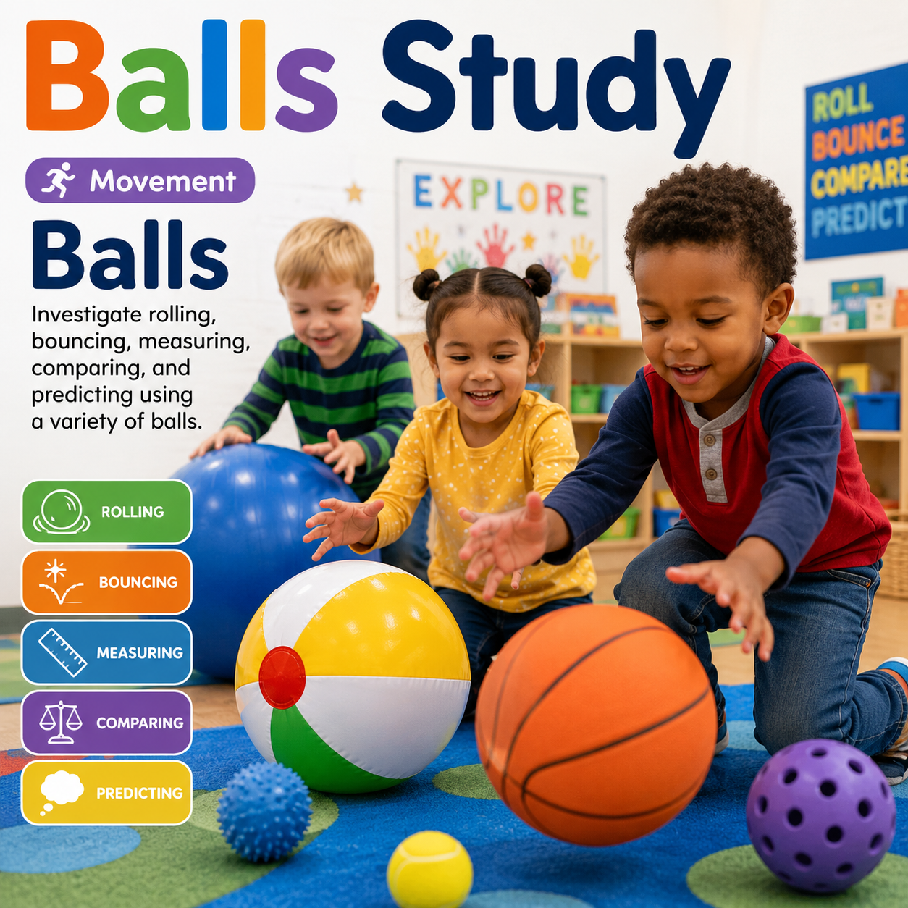
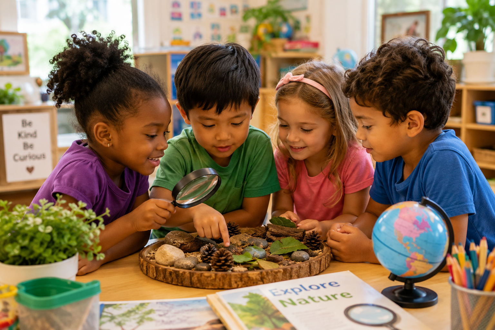
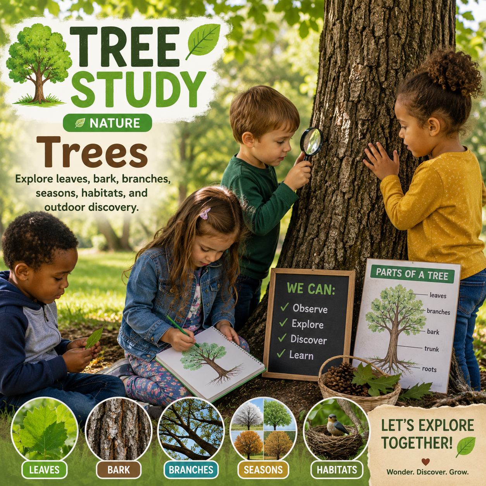
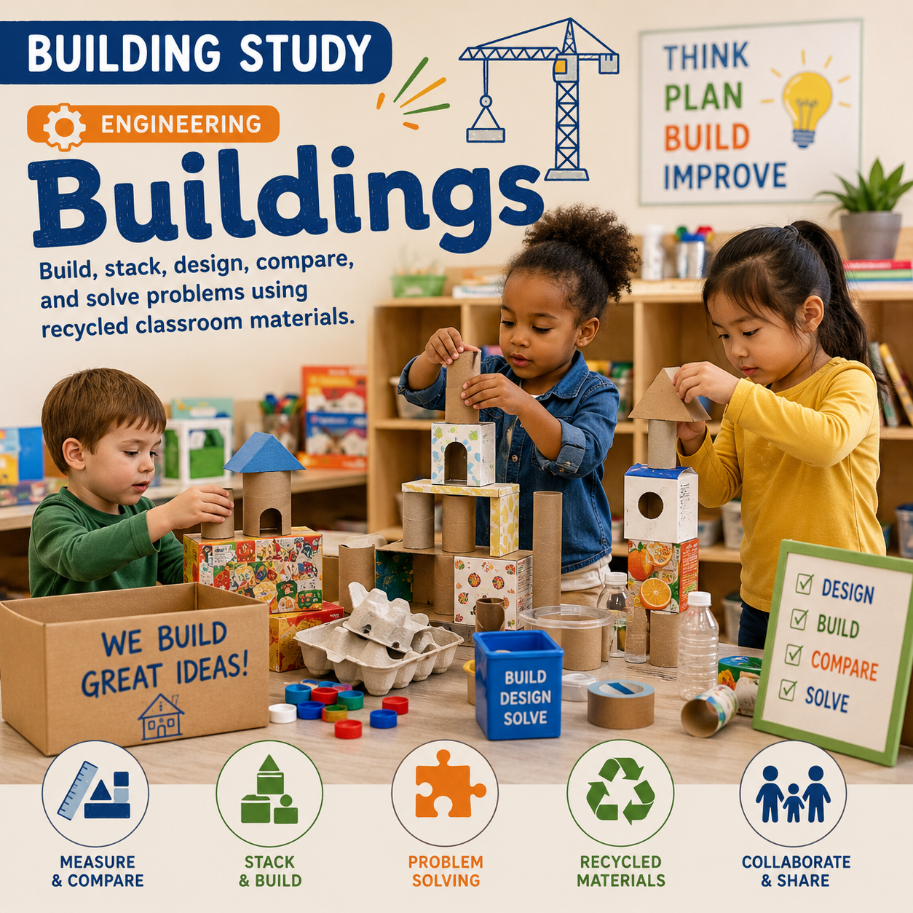
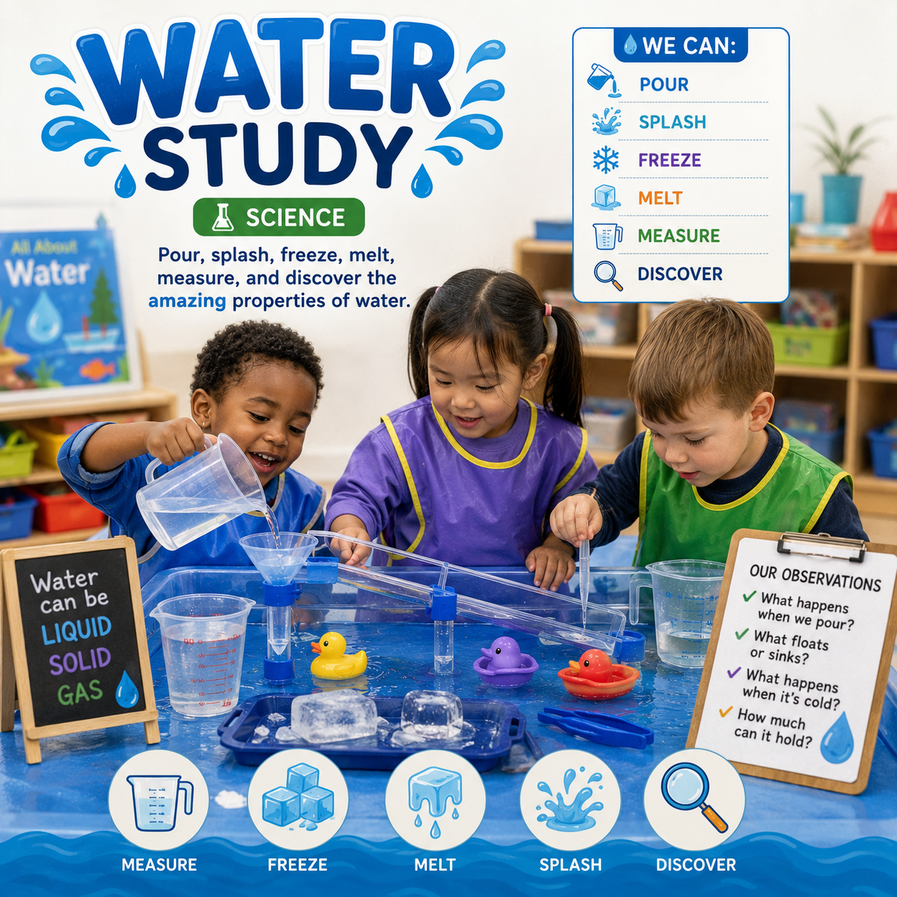
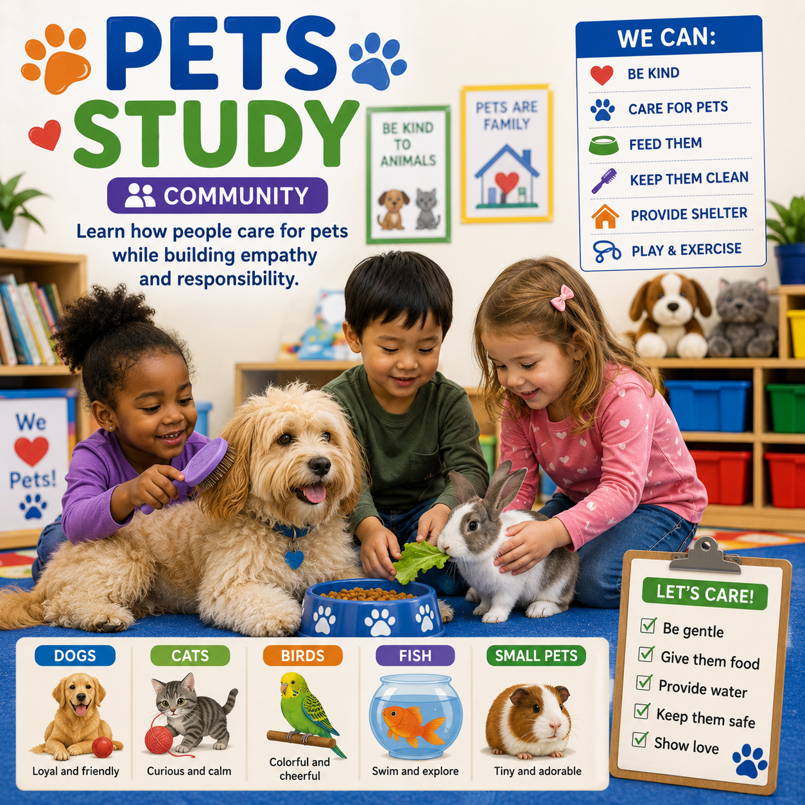
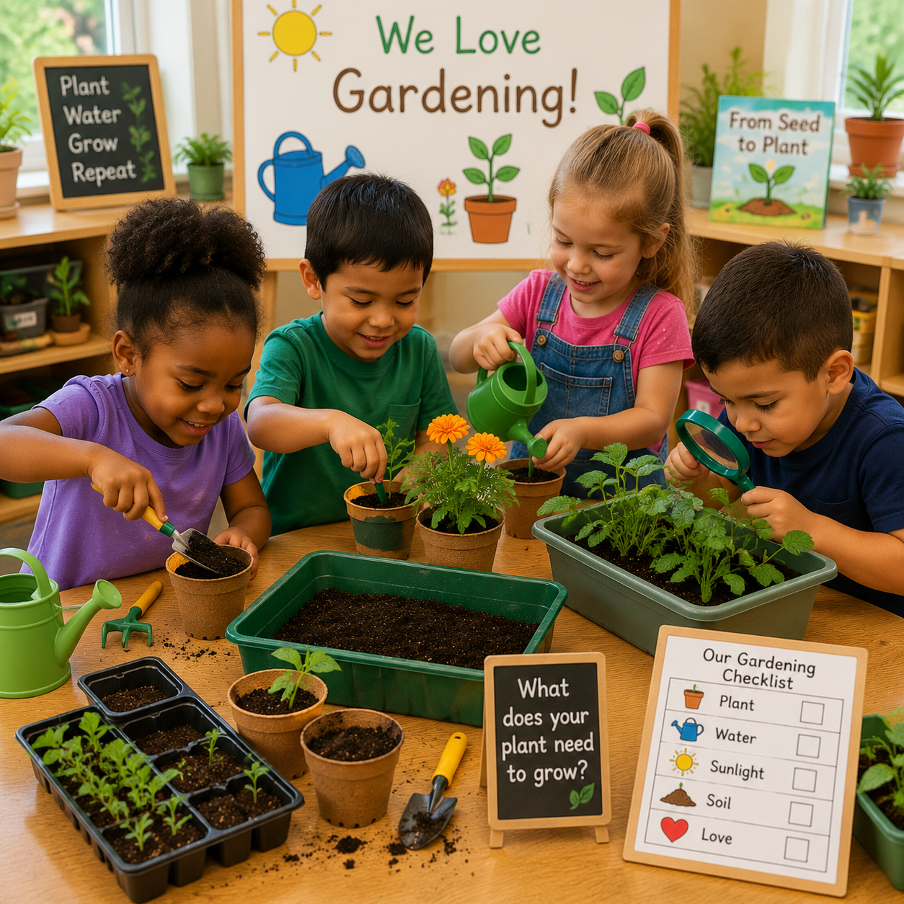

Movement
Balls
Investigate rolling, bouncing, speed, measurement, prediction, and motion through playful exploration.
Free, practical curriculum studies and classroom tools for Early Head Start, Head Start, preschool, and pre-kindergarten educators. Plan meaningful learning, connect activities to school readiness goals, document children's growth, and support behavior through positive, developmentally appropriate guidance.

Find curriculum studies, lesson plans, classroom activities, and printable resources designed specifically for the children you teach.
Explore engaging investigations designed to encourage curiosity, creativity, problem solving, and meaningful hands-on learning using affordable classroom materials.

Investigate rolling, bouncing, speed, measurement, prediction, and motion through playful exploration.

Discover leaves, bark, branches, habitats, weather, seasons, and outdoor science through investigation.

Build, compare, design, and solve problems while exploring architecture and engineering concepts.

Investigate floating, sinking, freezing, melting, pouring, and the fascinating properties of water.

Learn responsibility, empathy, communication, and science while exploring the world of pets.

Plant seeds, observe growth, care for living things, and discover how gardens change throughout the seasons.
Everything is organized so teachers can move easily from curriculum planning to classroom implementation, assessment, and family support.
Practical resources designed with real early childhood classrooms in mind.
Explore Teacher Resources →Hands-on experiences supporting curiosity, exploration, creativity, and development.
Explore Activities →Observation, documentation, and developmental assessment resources.
Visit Assessment Center →Explore classroom learning centers and intentional learning environments.
Explore Interest Areas →Resources that strengthen connections between classrooms and families.
Explore Family Engagement →Use the Hub in the order that supports your work: plan meaningful experiences, observe learning, respond to children's needs, and partner with families.
Turn a study or learning goal into practical weekly and daily experiences.
Open lesson plans → 02 · ALIGNConnect intentional teaching and observations with relevant ELOF domains and goals.
Explore school readiness → 03 · OBSERVERecord what children do, reflect on progress, and plan appropriate next steps.
Open assessment tools → 04 · SUPPORTUse positive guidance, prevention, observation, and individualized supports.
Explore behavior support →